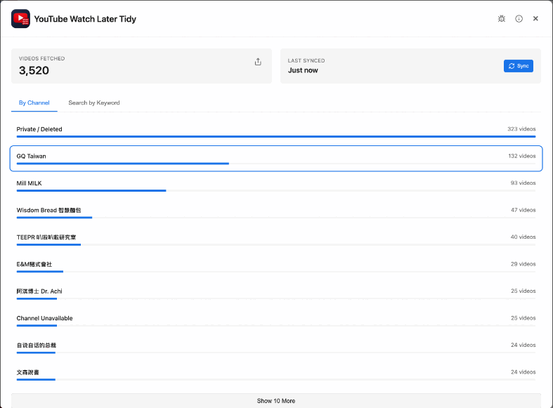

{% for i in (1..r.rating) %}★{% endfor %}
{%- endif %}
"{{ r.quote }}"

TidyWL is a free extension for Chrome and Firefox that bulk-deletes, filters, and organizes your Watch Later — and downloads transcripts in bulk. No account. Nothing leaves your browser unless you ask it to.

The difference
Watch Later on its own
Watch Later with TidyWL
Watch the demo
Why I built this
For years I dumped everything into Watch Later like it was a bottomless pit. Turns out it isn't. YouTube has a hidden 5,000-video limit, and once you hit it, new videos silently fail to save: no error, no warning. The only way I noticed was when videos I thought I'd saved weren't there anymore.
The "fix" was even worse: no bulk delete, no filtering, no search. Just me, scrolling through an endless list, removing videos one by one. Every 1-2 months I'd lose an evening to it.
I finally snapped and built TidyWL, a free Chrome extension that gives you an actual dashboard for your Watch Later. See a breakdown by channel, filter and sort by date or duration, search by title, and bulk-delete hundreds of videos in seconds.
Dominic, indie developer
Features
YouTube silently stops saving videos past 5,000. TidyWL helps you clean out old videos so you can keep adding new ones.
Unique to TidyWLYouTube forces you to delete videos one by one. TidyWL lets you select hundreds with checkboxes and bulk-delete in seconds.
Select any number of videos and get one timestamped text file each, named after the video. TidyWL checks which ones actually have captions first, then tells you exactly what it couldn't get and why. Runs in a small visible window, about three seconds per video.
Push your chosen videos straight into a Gemini Notebook (formerly NotebookLM) as sources — a new notebook or one you already have — without leaving the dashboard. It's the one feature that leaves your machine: the links you pick go to Google under your own login. Nothing else does.
See your Watch Later organized by channel. Find all the videos from that one YouTuber you binged three months ago in one click.
Automatically groups your Watch Later by recurring keywords in titles (e.g. "recipe", "react", "interview"). Click a topic to filter down to it, or hide it to get it out of the way — as many topics as you like. Runs 100% client-side, no API calls, no data sent anywhere.
And everything else you'd expect
Filter watched, unwatched, or unavailable videos. Progress bars on every card.
Progress bar, duration badge, view count, and upload date on every card.
Open all selected videos at once as background tabs. No one-by-one clicking.
See exactly why YouTube's count differs from yours, with a reason shown per hidden video.
Find videos by title, channel, watched status, availability, or duration — preset buckets including Shorts, or your own min/max in minutes. Sort by playlist order, duration, views, published date, channel, or title.
Send videos to the top or bottom in one click, or drag and drop — single or multi-select.
Works on Page (brand-channel) Watch Later playlists too. New in v1.2.0.
Isolated storage per YouTube account. No cross-contamination.
Move or copy selected videos to any playlist, or create a new one inline. YouTube has no bulk-move at all.
Export to JSON or CSV anytime.
Plus a toolbar that stays pinned while you scroll, a notification bell that badges when there's something new, keyboard shortcuts, shift-click selection, filter chips, and the version number right in the dashboard header. Works in Chrome and in Firefox 153+.
How it works
Step 1
Step 2
Step 3
Reviews
"{{ r.quote }}"
More from the community
"{{ r.quote }}"
FAQ
Support
Most issues have a quick fix. Start here before reaching out.
For anything the common fixes above don't cover: bug reports, questions, feedback, Ko-fi issues.
Email supportPrivacy
No servers. No tracking. No accounts. TidyWL works in your browser using the YouTube session you already have, and your playlist data stays on your machine.
One exception, and you trigger it yourself: Send to Gemini Notebook hands the video links you picked to Google under your own login, because that is the entire point of the feature. Nothing else ever leaves.